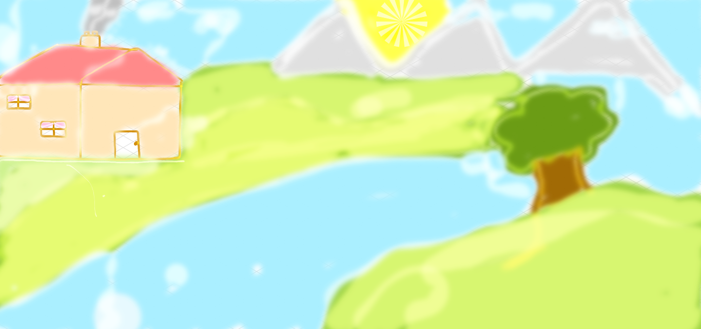

who I like to cuddle.
here is the Dog
who I like to cuddle.
here is the Dog
My lovely dog Kuki: who I like to cuddle.
here is the Dog
this is a picture of
killer whaleMy una casa en Scotland lo que yo diseño:  who I like to cuddle.
The sky and river reflecting white clouds in the sky are delicate shades of blue.
Soft lime greens for the mossy grass growing by the river and for the leaves of the tree.
Terracotta pink for the roof of the house, a roof designed to keep the people inside more comfortable by stopping the rain from falling in and to keep the cold out and the warmth in: this is Scotland where it is often cold and wet and windy and rainy.
The violet velvet curtains at the windows are the color of heather, they hint at warmth and comfort within the house. The billowing grey clouds of smoke from the chimney shows us that there is hot food and cups of tea within the house to help us get warm again after being outside in the cold.
The house is framed in brown and weathered oak wood as are the door and window frames. The oak wood has weathered the wind well while the house has stood there for so many years beside the winding, rushing river which makes its way down, down to the sundering sea. From each room we can see flowing, falling water. On the other side of the house there is a boat afloat in a bay away by the sea that we cannot see from here.
In the distance, across the sea, we can see tall mountains reflecting sunlight in a far, high country where the sun always shines, where it gleams on the snow on high mountain peaks where wild hibiscus flowers bloom. The mountains are called: Citlaltépetl, Popocatépetl, Iztaccíhuatl. The mountains focus the light from the sun across the sea in a starburst all the way to dark and gloomy Scotland, where the rays of light pick out the edges of the roof of the house in brilliant white, they lighten the chimney, they glisten on the green leaves of the trees, they lighten the bark of the tree, they reflect off the wet grass, they shine on the river flowing into the sea that sunders the house from the mountains in the distant country of permanent sunshine.
The people in the house are happy. There is room for their dogs - they need lots of room because they have 8 - but surprisingly they do not bark much and are very clean. They have lots of croquettes for the dogs. They have sheep and cows to mow the grass. There are many fish in the sea. The countryside is lit by reflected light from the sun creating fantastic views from every window. The house is a place of refuge should it start to rain or storm. If a thunderstorm threatens, then the people within just draw their violet velvet heather colored curtains and sit by the fire playing cards in their pyjamas while enjoying hot cups of tea until the sun comes out again and the whole world glistens with a starburst of light refracting from the rain drops covering every plant, flower and tree.
This is summer in Scotland when the sun never sleeps and you can go mountaineering at 4pm in the afternoon and still be home in time for tea.